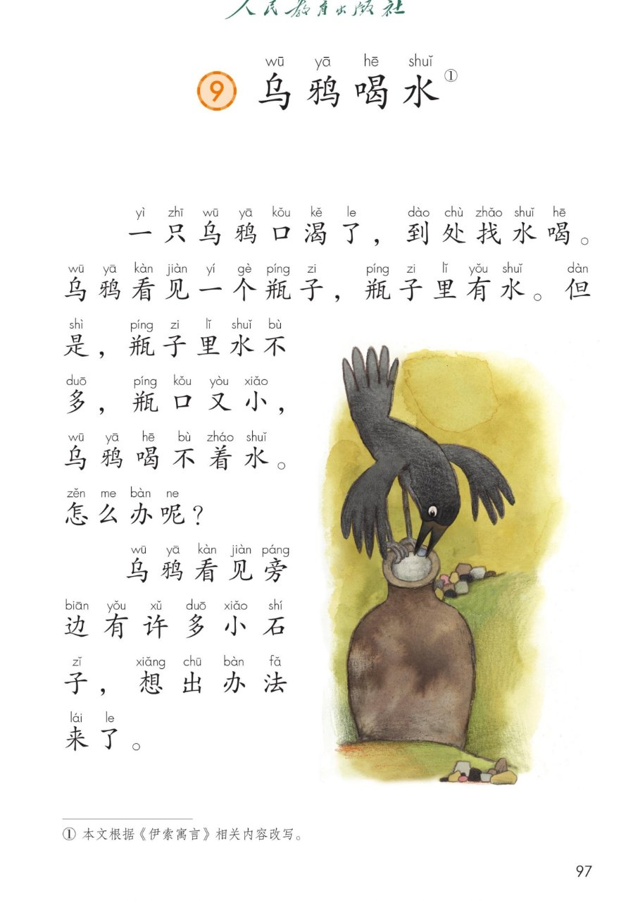
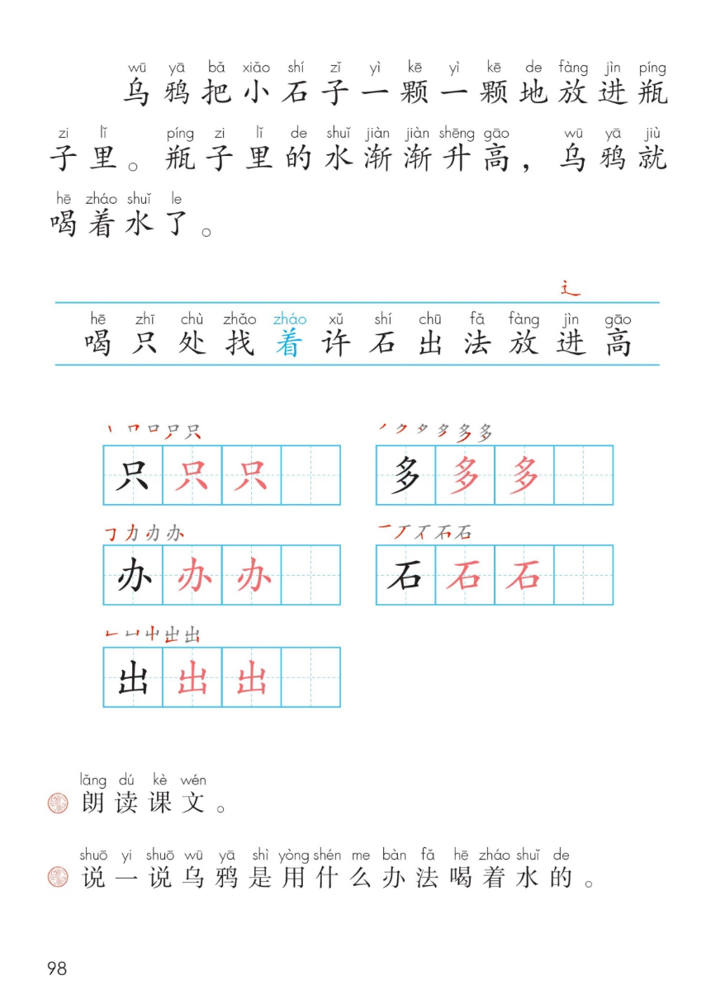

×
🔊 手机听不到声音怎么办？
① 先把手机
媒体音量调大 ，确认没开静音、没连蓝牙耳机；在微信里打开的，点右上角「⋯ → 用浏览器打开」。
② 还是没声音？到应用商店免费下载
Microsoft Edge 浏览器 （它自带朗读发声），用它打开本页面就能出声。
③ 换了 Edge 仍然没声音，说明这部手机的
硬件/系统不支持 网页朗读（多为老旧机型）；近几年买的新手机一般都能正常播放。
→ 打开声音自检
统编版 · 一年级上册 · 第八单元 · 阅读 · 课文9
⑨ 乌 鸦 喝 水
一只乌鸦口渴了，到处找水喝……
3 个自然段 按顺序讲故事 一颗一颗·渐渐 闯关 8 题
这一课学什么： 把 3 个自然段读顺；认识 12 个字，写好「只、多、办、石、出」；
用先、再、然后、最后 把乌鸦喝水的办法说清楚，还要按顺序讲一讲这个小故事。🐦⬛🏺
页面上的拼音是照课本标的，供参考，以课本和老师为准。
课本第 97~98 页 点一段读一段
读前小贴士： 课文一共 3 个自然段 。
第 1 段口渴找水、却喝不着 ，第 2 段看见石子、想出办法 ，
第 3 段放石子、水升高、喝着水了 。读「怎么办呢？」要读出想主意的语气。🤔
🎵 全文连读
🔁 跟读模式（读完一段停一停）
课本第 97~98 页 点一句读一句
🔊 七句连读
🐢 放慢读（每句读两遍）
课后题① 朗读课文。 🎯 三个小窍门：
逗号 停一小下，句号 停一大下，问号 声音往上扬；
读到「一颗一颗 」「渐渐 」慢一点，让人听出水是一点一点升高的。📖
课本第 97~98 页 点卡听读
🗣️ 按顺序连起来讲一遍
🧩 讲故事小支架： 用 先 → 再 → 然后 → 最后 把四步连起来，
一件事接一件事，别人一听就明白。可以先用上面的按钮听一遍，再自己讲给同桌听。🗣️
课本第 98 页识字条 点一张读一张
识字条 · 连起来读
喝 只 处 找 着 许 石 出 法 放 进 高 —— 上方红字是新偏旁「辶 」，蓝色的「着 」要读准
课本第 98 页 点卡听读
课本第 98 页田字格 先看笔顺，再动笔
✍️ 写字小提醒： 只 下面是分开的两点；多 是两个「夕」上下叠，上小下大；
办 中间是「力」，左右两点别漏；石 先横后撇，下面的「口」写扁一点；
出 两个「山」上下叠，中间一竖贯通。课本上「黑字示范 → 两格红字描红 → 一格自己写」。
课本第 98 页课后题 先自己说，再听示范
课后题② 说一说乌鸦是用什么办法喝着水的。 乌鸦把小石子一颗一颗地放进瓶子里，瓶子里的水渐渐升高，乌鸦就喝着水了。
先渴了找水 → 再喝不着 → 然后想出办法 → 最后喝着水 」连起来说。🗣️
课本第 98 页 点卡听读
🔬 为什么会升高： 石子放进瓶子里要占地方 ，水就被挤得往上走，
所以水面渐渐升高 ，乌鸦的嘴够得着了。不是水变多了，是水被石子挤上来了。
想试一试，可以用透明杯子装一点水，请大人陪着放几颗小石子观察水面。
💡 故事里的小道理： 乌鸦喝不着水没有飞走，而是先观察 （看见小石子）、
再动脑 （想出办法）、最后动手 （一颗一颗放进去）。
遇到困难，也可以看一看、想一想、试一试。🌟
📚 认识来历： 课本脚注写着「① 本文根据《伊索寓言》相关内容改写」。
《伊索寓言》是古老的故事集，很多小故事里都藏着一个道理。
点题目可以听题，点选项就判对错，答完自动算分
已经答 0 题，答对 0 题。
点图放大

第 97 页 · 课题 · 前两个自然段 · 插图 · 脚注

第 98 页 · 第三自然段 · 识字条 · 田字格 · 课后题